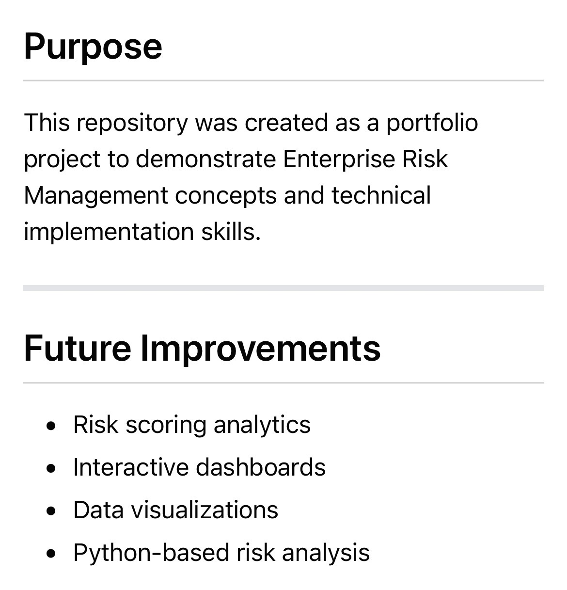
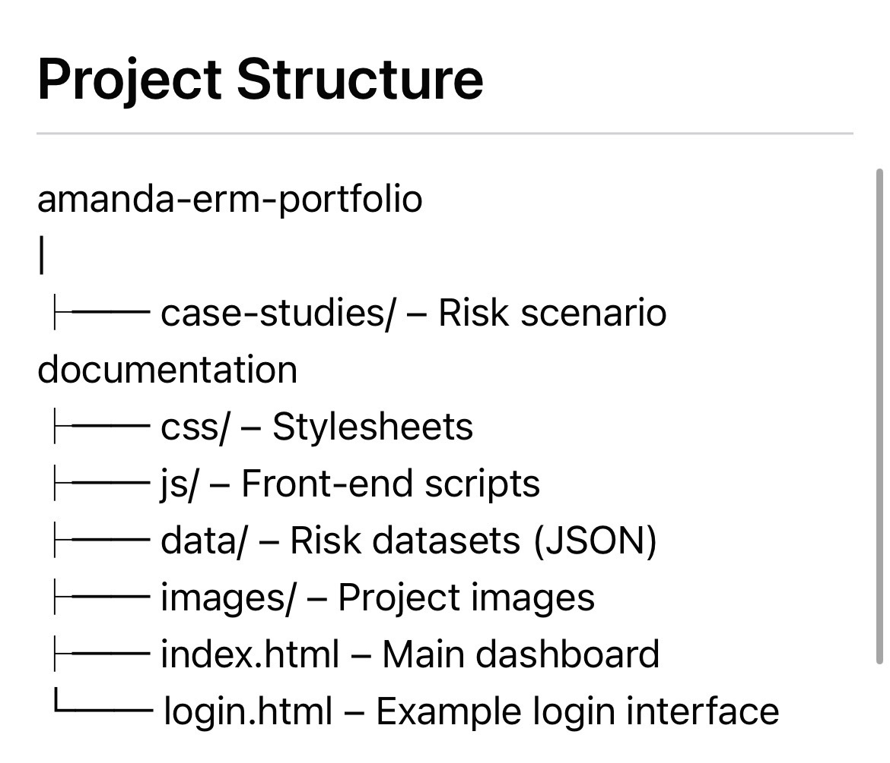
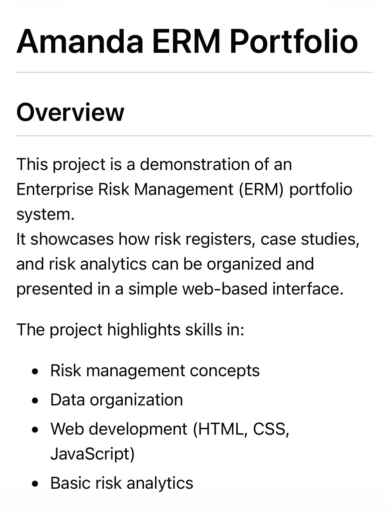

Museum Risk & Visitor Insights
A sample project exploring museum-related dashboards, visitor data, and operational risk insights.
View Case StudyA portfolio showcasing risk management, operations workflows, dashboards, and sector-focused projects including museums, nonprofits, and more.
This project demonstrates structured portfolio presentation across Enterprise Risk Management, operational planning, and sector-based work.
Explore projects by category.

A sample project exploring museum-related dashboards, visitor data, and operational risk insights.
View Case Study
A portfolio example focused on governance, compliance tracking, and nonprofit operational structure.
View Case Study
A simplified ERM dashboard project demonstrating structured risk registers, reporting, and portfolio presentation.
View DashboardAn operations-focused portfolio piece showing process improvement, workflow mapping, and performance monitoring.
View Operations WorkThis section adds operational work to the existing portfolio and highlights process design, workflow management, reporting, and performance support.
Documenting and improving operational workflows to support more efficient and consistent outcomes.
Building dashboards and summaries to support decision-making, accountability, and visibility across teams.
Supporting operational discipline through review processes, controls, and routine monitoring activities.
Applying operations thinking across museums, nonprofits, and enterprise environments.
Email: your-email@example.com
GitHub: github.com/yourusername